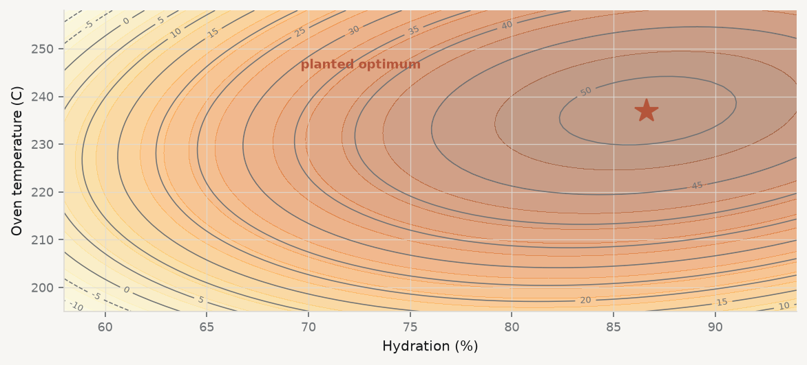
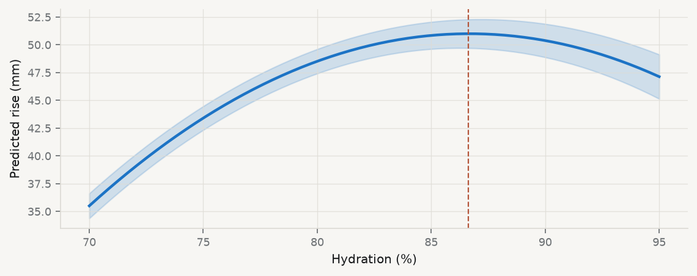

(240, 7)| loaf_id | baker | hydration_pct | oven_c | starter_age_days | flour | rise_mm | |
|---|---|---|---|---|---|---|---|
| 0 | 236 | H | 79.9 | 240.0 | 14 | white | 37.9 |
| 1 | 54 | B | 59.7 | 259.0 | 9 | white | -9.4 |
| 2 | 8 | A | 63.1 | 200.0 | 7 | wholemeal | 13.6 |
| 3 | 140 | E | 84.2 | 251.0 | 4 | wholemeal | 36.1 |
| 4 | 76 | C | 78.6 | 228.0 | 5 | wholemeal | 48.7 |
Curves, interactions, and the groups you did not measure
HEC Montréal
I(x**2) for arithmetic inside a formulax*z for main effects plus interaction; x:z for the interaction aloneC(group) for a full set of dummies(240, 7)| loaf_id | baker | hydration_pct | oven_c | starter_age_days | flour | rise_mm | |
|---|---|---|---|---|---|---|---|
| 0 | 236 | H | 79.9 | 240.0 | 14 | white | 37.9 |
| 1 | 54 | B | 59.7 | 259.0 | 9 | white | -9.4 |
| 2 | 8 | A | 63.1 | 200.0 | 7 | wholemeal | 13.6 |
| 3 | 140 | E | 84.2 | 251.0 | 4 | wholemeal | 36.1 |
| 4 | 76 | C | 78.6 | 228.0 | 5 | wholemeal | 48.7 |
Eight bakers, thirty loaves each. Hydration is the water-to-flour ratio; rise is how far the loaf came up, in millimetres.
flat = smf.ols("rise_mm ~ hydration_pct + oven_c", data=d).fit()
print(flat.params.round(4))
print(f"\nR2 = {flat.rsquared:.4f}")Intercept -85.0400
hydration_pct 0.6012
oven_c 0.2948
dtype: float64
R2 = 0.3575best recipe according to this model: hydration 95.0%, oven 260 C
...which is the top-right corner of the design.Both coefficients are positive, so the model’s advice is “as wet and as hot as possible”. A linear model cannot report an interior optimum — it always points at an edge. If your answer is at the boundary of your data, suspect the model before you believe the recommendation.
\[ y = \beta_0 + \beta_1 x + \beta_2 x^2 + \varepsilon \]
Differentiate and set to zero: the turning point is at
\[ x^\star = -\frac{\beta_1}{2\beta_2} \]
and it is a maximum when \(\beta_2 < 0\).
quad = smf.ols("rise_mm ~ hydration_pct + I(hydration_pct**2)", data=d).fit()
b1 = quad.params["hydration_pct"]
b2 = quad.params["I(hydration_pct ** 2)"]
print(f"b1 = {b1:+.4f}, b2 = {b2:+.5f} (b2 < 0, so it is a hill)")
print(f"peak at -b1/2b2 = {-b1 / (2*b2):.2f} % hydration")
print(f"R2 {flat.rsquared:.4f} -> {quad.rsquared:.4f}")b1 = +9.2165, b2 = -0.05681 (b2 < 0, so it is a hill)
peak at -b1/2b2 = 81.11 % hydration
R2 0.3575 -> 0.4122Once \(x^2\) is in the model, \(\beta_1\) is no longer “the effect of \(x\)”. The slope now varies with \(x\):
\[ \frac{\partial y}{\partial x} = \beta_1 + 2\beta_2 x \]
for h in (65, 75, 85, 92):
print(f"at {h}% hydration, one more point of water is worth "
f"{b1 + 2*b2*h:+.3f} mm")at 65% hydration, one more point of water is worth +1.831 mm
at 75% hydration, one more point of water is worth +0.695 mm
at 85% hydration, one more point of water is worth -0.442 mm
at 92% hydration, one more point of water is worth -1.237 mmPositive on the way up, negative past the peak. Reporting \(\beta_1\) alone would be reporting the slope at a hydration of zero — a dough made entirely of flour.
Is the best oven temperature the same for wet dough as for dry dough?
\[ y = \beta_0 + \beta_1 x + \beta_2 z + \beta_3 xz + \varepsilon \qquad\Longrightarrow\qquad \frac{\partial y}{\partial z} = \beta_2 + \beta_3 x \]
\(\beta_3\) is the amount by which the effect of temperature changes per unit of hydration. If it is zero, the two variables act independently and you can give one recommendation for each. If it is not, you cannot.
In a formula: x:z is the interaction alone, x*z expands to x + z + x:z. Prefer x*z — an interaction without its main effects is almost never what you meant.
full = smf.ols(FULL, data=d).fit()
b3 = full.params["hydration_pct:oven_c"]
print(f"interaction {b3:+.5f} t = {full.tvalues['hydration_pct:oven_c']:.2f}"
f" p = {full.pvalues['hydration_pct:oven_c']:.1e}")interaction +0.01506 t = 17.00 p = 2.3e-42
best oven temperature, conditional on hydration:
65% hydration -> 229.0 C
75% hydration -> 232.7 C
85% hydration -> 236.4 C
90% hydration -> 238.2 CNine degrees between the driest and the wettest dough. An additive model gives the same temperature for both, and that is the specific thing it gets wrong.

The ridge runs diagonally. That diagonal is the interaction: wetter dough wants a hotter oven.
hydration_pct rise_mm
baker
A 62.5 16.7
B 64.3 16.9
C 71.4 29.7
D 75.5 33.4
E 74.7 29.9
F 81.3 30.7
G 86.5 29.5
H 88.9 27.2Look at the two columns together. The bakers who work wettest get the lowest rise — not because water hurts, but because those happen to be the less skilled bakers. Hydration and skill move together, and the regression cannot separate them unless you tell it that bakers exist.
C(baker) doesIt adds one dummy per baker (minus a reference), giving each their own intercept. The other coefficients are then estimated within bakers: from variation in hydration among that baker’s own loaves, where skill is held constant because it is the same person.
no_fe = FULL.replace(" + C(baker)", "")
m_nofe = smf.ols(no_fe, data=d).fit()
h_nofe, t_nofe = peak(m_nofe)
h_fe, t_fe = peak(full)
print(f"without baker effects: {h_nofe:5.2f}% hydration R2 = {m_nofe.rsquared:.3f}")
print(f"with baker effects: {h_fe:5.2f}% hydration R2 = {full.rsquared:.3f}")
print(f"planted answer: {H_TRUE:5.2f}%")without baker effects: 82.41% hydration R2 = 0.904
with baker effects: 86.69% hydration R2 = 0.965
planted answer: 86.62%the model without baker effects is off by -4.20 percentage points
and it reports R2 = 0.904Ninety per cent of the variance explained, every coefficient significant, and a recommendation four points of hydration wrong. Nothing in that model’s own output reveals the problem. The only way to find it was to know the bakers were confounded with the treatment and to control for them.
This is omitted variable bias with a name you can act on. The omitted variable was not unobservable — it was sitting in a column called baker.
Fixed effects are not free and are not always right. They are the correct tool when you want the within-group effect and suspect the between-group comparison is contaminated.
model R2 AIC hydration* oven* error (pp)
linear, with baker FE 0.490 1819.4 95.00 260.0 8.38
+ quadratics, no interaction 0.919 1380.6 84.86 232.4 -1.75
+ interaction, no baker FE 0.904 1411.1 82.41 235.6 -4.20
everything 0.965 1185.5 86.69 237.0 0.07
planted optimum: 86.62% hydration, 236.9 CThe full model lands 0.07 percentage points from the planted answer. Every incomplete model is confidently wrong in a different direction.
An optimum estimated from data has uncertainty, and quoting it to two decimal places implies a precision you do not have.
pred = full.get_prediction(pd.DataFrame(
{"hydration_pct": np.linspace(70, 95, 60), "oven_c": T_TRUE, "baker": "D"}
)).summary_frame()
hs2 = np.linspace(70, 95, 60)
fig, ax = plt.subplots(figsize=(7.2, 2.9))
ax.plot(hs2, pred["mean"], color=CL.accent)
ax.fill_between(hs2, pred["mean_ci_lower"], pred["mean_ci_upper"],
color=CL.accent, alpha=0.18)
ax.axvline(H_TRUE, color=CL.warn, ls="--", lw=1)
ax.set_xlabel("Hydration (%)"); ax.set_ylabel("Predicted rise (mm)")
plt.show()
The peak is flat. Anything from roughly 82% to 91% is indistinguishable, and that — not a single number — is the honest recommendation.
\[ \mathrm{AIC} = -2\log L + 2k \]
Fit, penalised for parameters. Lower is better, and only relative — an AIC of 1,204 means nothing on its own.
nested_test = smf.ols(FULL.replace(" + hydration_pct:oven_c", ""), data=d).fit()
f_stat, p_val, _ = full.compare_f_test(nested_test)
print(f"F-test for adding the interaction: F = {f_stat:.2f}, p = {p_val:.2e}")
print(f"AIC {nested_test.aic:.1f} -> {full.aic:.1f}")F-test for adding the interaction: F = 289.08, p = 2.31e-42
AIC 1380.6 -> 1185.5Two rules. Compare AIC only on identical rows — drop a missing value in one model and the comparison is void. And use the F-test only for nested models; AIC is what you have when they are not.
A model chosen by AIC was chosen by you, using AIC. Reporting it as though the data selected it — and then reporting its \(p\)-values as though you had not looked — is the most common quiet misuse of model comparison.
Essentials of Data Science in Python · Session 02 · Thierry Warin, PhD